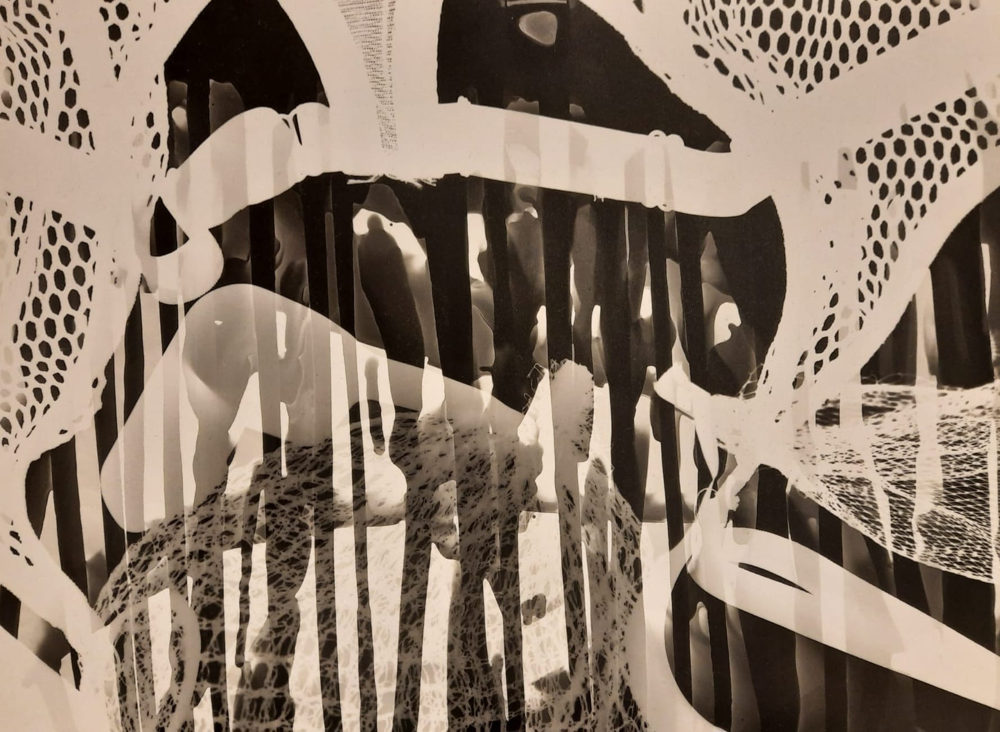
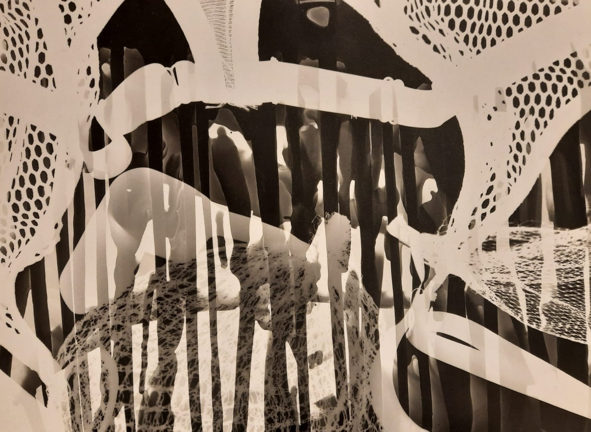

o__o
Xara Sheherazade gestaltet digitale Kunst zum erleben. Interaktive Installationen, zum Mitmachen – zum Nachdenken.
Aktuell studiert sie Kunst und Multimedia an der LMU München und experimentiert mit allem, was zwischen Code, Raum und Gefühl passiert.
Was noch geschieht
AUSGESTELLT – Werkschau der Studierenden der Bildenden Kunst an der LMU München
Eröffnung (Vernissage): Donnerstag, 11. September 2025
Finissage: Samstag, 27. September
Öffnungszeiten: Donnerstag bis Sonntag, 16 – 20 Uhr
Ort: Farbenladen im Feierwerk, München
Eintritt frei
Was schon geschah
- DEZ 2024 – Broke Today Happy End Hotel – Installation Kamerapuppe
- APR 2025 – Pixel Gasteig – Puppen & Liquid Light Show
- MAI 2025 – DAS Digital Art Space – Puppe & KI
- MAI 2025 – Gallerie FÖE Bürgerpark Oberföhring – Der Zwerg
- JUN 2025 – DachüberKopf Festival – Skulpturen
- JUN 2025 – Mucca Skate Jam – Liquid Light Show
Was ich so die letzten 10 Jahre getrieben hab
- SEP 2023 – Heute – BA Kunst & Multimedia / Medieninformatik – LMU
- JAN 2023 – Heute – Junior Projekt Lead – (IT, E-Learning & Digitalisierung)
- 2019 – 2022 – Wissenschaftliche Mitarbeiterin – Hochschule Kempten
- Class of 2020 – First Class Honours Bachelor International Business & HRM – Glasgow
- FEB – JUN 2018 – Development Center Koordination – Deutschland & USA
- 2015 – 2018 – Event Assistant & Teamleitung – ASA & Buhl GmbH
- 2015 – 2017 – HNC Diploma in Hospitality Management – Glasgow College
←
 
